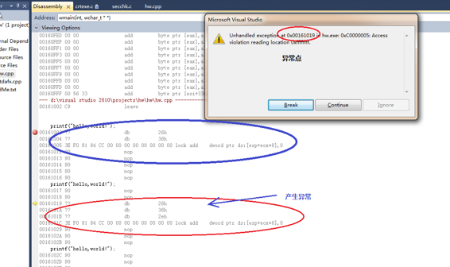

尽管上面的 disassembly 给我们带来了更多的迷惑，但是要清楚认识到：那些并不是真实机器的指令边界。那只是 disassembler 的 disassembly 的指令边界。
我在 bochs 对比两条同样的指令，第 1 条是 15 bytes，第 2 条是 16 bytes，如下：
1 <bochs:3> u /4 2 00007c00: ( ): lock add dword ptr es:[eax+ecx*8], 0x00000000 ; 266667f08184c80000000000000000 3 00007c0f: ( ): nop ; 90 4 00007c10: ( ): lock add dword ptr ds:[eax+ecx*8], 0x00000000 ; 263e6667f08184c80000000000000000 5 00007c20: ( ): nop ; 90
为了观察行为，我将必要的调试选项打开，如下：
1 <bochs:4> trace-reg on 2 Register-Tracing enabled for CPU0 3 <bochs:5> trace-mem on 4 Memory-Tracing enabled for CPU0 5 <bochs:6> show int 6 show interrupts tracing (extint/softint/iret): ON 7 show mask is: softint extint iret
最主要是 mem 观察和 interupt 观察打开。
下面来看一看，指令的执行情况
执行第 1 条指令：
1 <bochs:6> u 2 00007c00: ( ): lock add dword ptr es:[eax+ecx*8], 0x00000000 ; 266667f08184c80000000000000000 3 <bochs:7> s 4 [CPU0 RD]: LIN 0x000000000000aa55 PHY 0x0000aa55 (len=4, pl=0): 0x00000000 5 [CPU0 WR]: PHY 0x0000aa55 (len=4): 0x00000000 6 00153228546: softint 0000:7c0f (0x00007c0f) 7 00153228546: iret 0000:7c0f (0x00007c0f) 8 Next at t=153228546 9 rax: 0x00000000:0000aa55 rcx: 0x00000000:00000000 10 rdx: 0x00000000:00000000 rbx: 0x00000000:00000000 11 rsp: 0x00000000:0000ffd6 rbp: 0x00000000:00000000 12 rsi: 0x00000000:000e32f8 rdi: 0x00000000:0000ffac 13 r8 : 0x00000000:00000000 r9 : 0x00000000:00000000 14 r10: 0x00000000:00000000 r11: 0x00000000:00000000 15 r12: 0x00000000:00000000 r13: 0x00000000:00000000 16 r14: 0x00000000:00000000 r15: 0x00000000:00000000 17 rip: 0x00000000:00007c0f 18 eflags 0x00000046: id vip vif ac vm rf nt IOPL=0 of df if tf sf ZF af PF cf 19 (0) [0x00007c0f] 0000:7c0f (unk. ctxt): nop ; 90
bochs 正确执行第 1 条指令没有产生异常， 下一条指令边界在 0x7c0f 上，这条指令是 15 bytes 的。 这是机器所能接受的最长指令。
下面看一看执行 16 bytes 指令的情况如何：
1 <bochs:8> 2 Next at t=153228547 3 rax: 0x00000000:0000aa55 rcx: 0x00000000:00000000 4 rdx: 0x00000000:00000000 rbx: 0x00000000:00000000 5 rsp: 0x00000000:0000ffd6 rbp: 0x00000000:00000000 6 rsi: 0x00000000:000e32f8 rdi: 0x00000000:0000ffac 7 r8 : 0x00000000:00000000 r9 : 0x00000000:00000000 8 r10: 0x00000000:00000000 r11: 0x00000000:00000000 9 r12: 0x00000000:00000000 r13: 0x00000000:00000000 10 r14: 0x00000000:00000000 r15: 0x00000000:00000000 11 rip: 0x00000000:00007c10 12 eflags 0x00000046: id vip vif ac vm rf nt IOPL=0 of df if tf sf ZF af PF cf 13 (0) [0x00007c10] 0000:7c10 (unk. ctxt): lock add dword ptr ds:[eax+ecx*8], 0x00000000 ; 263e6667f08184c80000000000000000 <- 16 bytes 指令 14 <bochs:9> 15 [CPU0 WR]: LIN 0x000000000000ffd4 PHY 0x0000ffd4 (len=2, pl=0): 0x0046 16 [CPU0 WR]: LIN 0x000000000000ffd2 PHY 0x0000ffd2 (len=2, pl=0): 0x0000 17 [CPU0 WR]: LIN 0x000000000000ffd0 PHY 0x0000ffd0 (len=2, pl=0): 0x7C10 18 [CPU0 RD]: LIN 0x0000000000000034 PHY 0x00000034 (len=2, pl=0): 0xFF53 <- 异常处理程序 19 [CPU0 RD]: LIN 0x0000000000000036 PHY 0x00000036 (len=2, pl=0): 0xF000 20 00153228548: exception (not softint) f000:ff53 (0x000fff53) <- 异常产生 21 Next at t=153228548 22 rax: 0x00000000:0000aa55 rcx: 0x00000000:00000000 23 rdx: 0x00000000:00000000 rbx: 0x00000000:00000000 24 rsp: 0x00000000:0000ffd0 rbp: 0x00000000:00000000 25 rsi: 0x00000000:000e32f8 rdi: 0x00000000:0000ffac 26 r8 : 0x00000000:00000000 r9 : 0x00000000:00000000 27 r10: 0x00000000:00000000 r11: 0x00000000:00000000 28 r12: 0x00000000:00000000 r13: 0x00000000:00000000 29 r14: 0x00000000:00000000 r15: 0x00000000:00000000 30 rip: 0x00000000:0000ff53 31 eflags 0x00000046: id vip vif ac vm rf nt IOPL=0 of df if tf sf ZF af PF cf 32 (0) [0x000fff53] f000:ff53 (unk. ctxt): iret ; cf <- 跳转到 exception 处理程序
如上图所示，执行 0x7c10 处的 16 bytes 的指令时，产生了异常。
processor 先写入 eip 值和 eflags 值，然后读入异常处理程序。最后跳转到 f000:ff53 处的异常处理程序， 这个异常处理程序只有一条 iret 指令。
1 <bochs:10> 2 [CPU0 RD]: LIN 0x000000000000ffd0 PHY 0x0000ffd0 (len=2, pl=0): 0x7C10 3 [CPU0 RD]: LIN 0x000000000000ffd2 PHY 0x0000ffd2 (len=2, pl=0): 0x0000 4 [CPU0 RD]: LIN 0x000000000000ffd4 PHY 0x0000ffd4 (len=2, pl=0): 0x0046 5 00153228549: iret 0000:7c10 (0x00007c10) 6 Next at t=153228549 7 rax: 0x00000000:0000aa55 rcx: 0x00000000:00000000 8 rdx: 0x00000000:00000000 rbx: 0x00000000:00000000 9 rsp: 0x00000000:0000ffd6 rbp: 0x00000000:00000000 10 rsi: 0x00000000:000e32f8 rdi: 0x00000000:0000ffac 11 r8 : 0x00000000:00000000 r9 : 0x00000000:00000000 12 r10: 0x00000000:00000000 r11: 0x00000000:00000000 13 r12: 0x00000000:00000000 r13: 0x00000000:00000000 14 r14: 0x00000000:00000000 r15: 0x00000000:00000000 15 rip: 0x00000000:00007c10 16 eflags 0x00000046: id vip vif ac vm rf nt IOPL=0 of df if tf sf ZF af PF cf 17 (0) [0x00007c10] 0000:7c10 (unk. ctxt): lock add dword ptr ds:[eax+ecx*8], 0x00000000 ; 263e6667f08184c80000000000000000 18 <bochs:11> 19 [CPU0 WR]: LIN 0x000000000000ffd4 PHY 0x0000ffd4 (len=2, pl=0): 0x0046 20 [CPU0 WR]: LIN 0x000000000000ffd2 PHY 0x0000ffd2 (len=2, pl=0): 0x0000 21 [CPU0 WR]: LIN 0x000000000000ffd0 PHY 0x0000ffd0 (len=2, pl=0): 0x7C10 22 [CPU0 RD]: LIN 0x0000000000000034 PHY 0x00000034 (len=2, pl=0): 0xFF53 23 [CPU0 RD]: LIN 0x0000000000000036 PHY 0x00000036 (len=2, pl=0): 0xF000 24 00153228550: exception (not softint) f000:ff53 (0x000fff53) 25 Next at t=153228550 26 rax: 0x00000000:0000aa55 rcx: 0x00000000:00000000 27 rdx: 0x00000000:00000000 rbx: 0x00000000:00000000 28 rsp: 0x00000000:0000ffd0 rbp: 0x00000000:00000000 29 rsi: 0x00000000:000e32f8 rdi: 0x00000000:0000ffac 30 r8 : 0x00000000:00000000 r9 : 0x00000000:00000000 31 r10: 0x00000000:00000000 r11: 0x00000000:00000000 32 r12: 0x00000000:00000000 r13: 0x00000000:00000000 33 r14: 0x00000000:00000000 r15: 0x00000000:00000000 34 rip: 0x00000000:0000ff53 35 eflags 0x00000046: id vip vif ac vm rf nt IOPL=0 of df if tf sf ZF af PF cf 36 (0) [0x000fff53] f000:ff53 (unk. ctxt): iret ; cf
当继续往下执行时，异常处理程序返回到异常发生点：0x7c10，接着执行又继续产生异常，又转入异常程序。
接下来，我测试一下 prefix override 的情形：
1 Next at t=153228547 2 rax: 0x00000000:0000aa55 rcx: 0x00000000:00000000 3 rdx: 0x00000000:00000000 rbx: 0x00000000:00000000 4 rsp: 0x00000000:0000ffd6 rbp: 0x00000000:00000000 5 rsi: 0x00000000:000e32f8 rdi: 0x00000000:0000ffac 6 r8 : 0x00000000:00000000 r9 : 0x00000000:00000000 7 r10: 0x00000000:00000000 r11: 0x00000000:00000000 8 r12: 0x00000000:00000000 r13: 0x00000000:00000000 9 r14: 0x00000000:00000000 r15: 0x00000000:00000000 10 rip: 0x00000000:00007c10 11 eflags 0x00000046: id vip vif ac vm rf nt IOPL=0 of df if tf sf ZF af PF cf 12 (0) [0x00007c10] 0000:7c10 (unk. ctxt): lock add word ptr ds:[eax+ecx*8], 0x0000 ; 263e67f08184c8000000000000 <- 修改后的指令 13 <bochs:10> 14 [CPU0 RD]: LIN 0x000000000000aa55 PHY 0x0000aa55 (len=2, pl=0): 0x0000 15 [CPU0 WR]: PHY 0x0000aa55 (len=2): 0x0000 16 Next at t=153228548 17 rax: 0x00000000:0000aa55 rcx: 0x00000000:00000000 18 rdx: 0x00000000:00000000 rbx: 0x00000000:00000000 19 rsp: 0x00000000:0000ffd6 rbp: 0x00000000:00000000 20 rsi: 0x00000000:000e32f8 rdi: 0x00000000:0000ffac 21 r8 : 0x00000000:00000000 r9 : 0x00000000:00000000 22 r10: 0x00000000:00000000 r11: 0x00000000:00000000 23 r12: 0x00000000:00000000 r13: 0x00000000:00000000 24 r14: 0x00000000:00000000 r15: 0x00000000:00000000 25 rip: 0x00000000:00007c1d 26 eflags 0x00000046: id vip vif ac vm rf nt IOPL=0 of df if tf sf ZF af PF cf 27 (0) [0x00007c1d] 0000:7c1d (unk. ctxt): add byte ptr ds:[bx+si], al ; 0000
注意上面修改后的指令，长度为 13 bytes，这里有一个 prefix override 情况：26 是 ES segment 而 3E 是 DS segment
进行了双重 segment override 操作，但这并不妨碍指令的正确执行，最终是以 DS 为 segment 参考，这是 processor 能接受的。
结论： bochs 的 diassembler 在反汇编上，可以接受大于 15 bytes 的指令边界。并不代表它能执行大于 15 bytes 的指令。事实上：bochs 不能执行大于 15 bytes 的指令。
下面来看一看 visual studio 上的表现如何：
同样我在 visual studio 2010 的 debug 模式下观察同一条指令的 15 bytes 和 16 bytes 下的执行情况：

执行第 1 条指令：26 36 3e f0 81 84 cc 00 00 00 00 00 00 00 00 （15 bytes）时，能正确执行。
当执行到另 1 条指令：26 36 2e 3e f0 81 84 cc 00 00 00 00 00 00 00 00 （16 bytes）时，产生了异常，异常的发生点就是这一条指令上 0x00161019
注意：虽然 visual studio 的 disassembler 在反汇编上不能接受 prefix override（即：多个同类型的 prefix），但是并不代表在真实执行指令上不接受 prefix override，上图的第 1 指令能正确执行，就说明这一点
结论：在 visual studio 里的例子说明：在真实机器上只能执行的最长指令边界为 15 bytes 上。大于 15 bytes 指令将会产生异常，这结论与 bochs 上的结论是一致的。